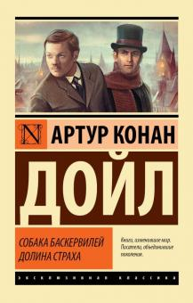
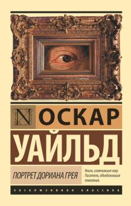

Books
Популярные книги XIX-XX веков
Топ 3 Популярных книг XIX века
1) Собака Баскервилей
«Приключения Шерлока Холмса: Собака Баскервилей — детективная повесть английского писателя Артура Конан Дойля, одна из четырёх его повестей о Шерлоке Холмсе, знаменитом и известном на весь мир британском детективе. Впервые публиковалась с августа 1901 года по апрель 1902 года в ежемесячном журнале «Strand Magazine». В основе сюжета повести лежит расследование смерти сэра Чарльза Баскервиля, который умер при загадочных обстоятельствах. В роду Баскервилей из поколения в поколение передаётся семейная легенда о дьявольской собаке сверхъестественного происхождения, которая преследует всех представителей рода Баскервилей. Шерлок Холмс и доктор Уотсон берутся за расследование этого дела. Время действия — сентябрь-октябрь 1889 года. Это было первое появление Холмса с момента его предполагаемой смерти в рассказе «Последнее дело Холмса». Успех данной повести способствовал возрождению персонажа
2) Три Мушкетера

«Три мушкетёра» — историко-приключенческий роман Александра Дюма-отца, впервые опубликованный в парижской газете Le Siècle в 1844 году с 14 марта по 11 июля. Книга посвящена приключениям молодого дворянина по имени д’Артаньян, отправившегося в Париж, чтобы стать мушкетёром, и трёх его друзей-мушкетёров Атоса, Портоса и Арамиса в период между 1625 и 1628 годами. История д’Артаньяна продолжается в двух других романах трилогии: «Двадцать лет спустя» и «Виконт де Бражелон, или Десять лет спустя».
3) Портрет Дорианна Грея
Портре́т Дориа́на Гре́я — единственный роман Оскара Уайльда.Роман оказался самым успешным произведением Уайльда, экранизировался в разных странах мира более 30 раз. Существует в трёх версиях — журнальный вариант в тринадцати главах, опубликованный в Lippincott’s Monthly Magazine в июле 1890 года, подвергшийся сокращениям, сделанным редактором журнала; первое книжное издание в двадцати главах (апрель 1891 года), в которое автором были добавлены главы III, V, XV—XVIII, а последняя глава разделена на две, ставшие главами XIX и XX. В основе всех изданий на английском языке и переводов лежит книжная версия 1891 года.